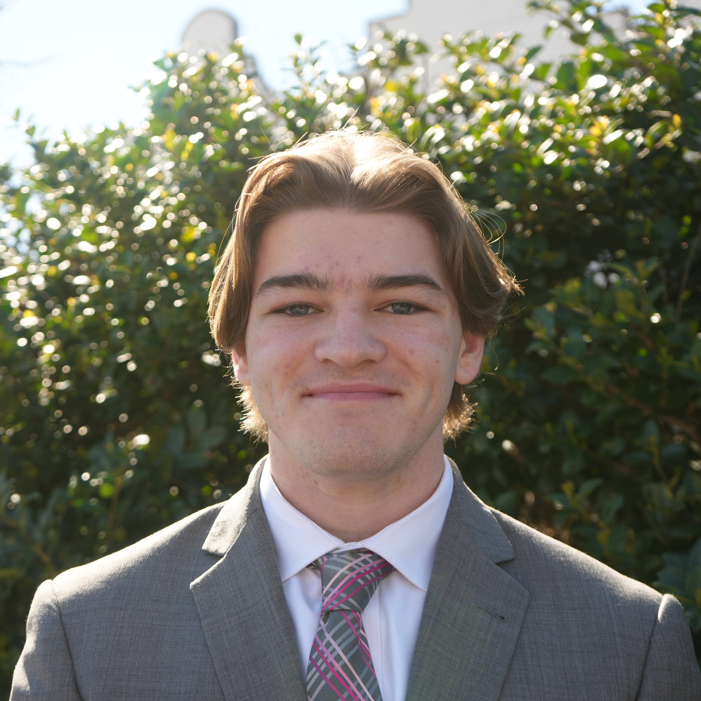
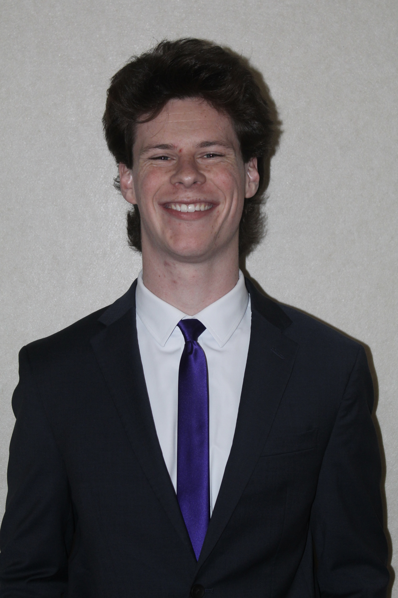
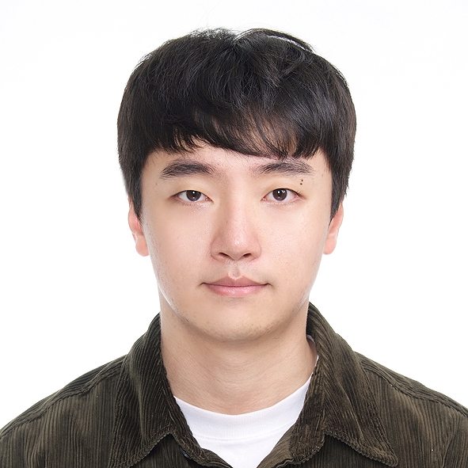

Meet The Team
This page tells visitors more about the team behind the Tutor Nation App.
August Connors

Hello! My name is August Connors, and I am a senior studying computer
science and mathematics at the University of Alabama. I have been involved
in UA's Quantime Lab for two years working with atomic clocks, which has
sparked my interest in both research and precision timekeeping. I am also
involved in a startup where I am gaining experience in full-stack and app
development.
In my free time, I enjoy hiking, camping, playing sports, and reading.
I recently started surfing and snowboarding, which I am excited to
continue improving at! In terms of books, I am really into sci-fi,
with my favorite series being Dune, Ender's Game, and Project Hail Mary.
Casey Derringer
Hey! My name is Casey Derringer. I'm a senior/second-year masters Computer Science student at the University of Alabama. I have experience in various fields of CS at the UA Autonomous Systems and Controls Lab, KBR Inc. Outside of school I'm involved with Mu Chapter of Theta Tau and am Captain of the Club Fencing team at UA.
Minseok Kim

My name is Minseok Kim, and I’m a senior Computer Science major.
I’m currently working as a software engineer at a startup, mainly
focused on Kotlin and Express.js, where I work on backend services
and APIs. I’m especially interested in integrating large language
models into backend systems, with a focus on improving functionality
while keeping the core system reliable and well-designed.
Previously, I worked as a software engineer in a manufacturing
company, where I used C#, Oracle, and Flutter to build internal
systems and production-related tools.
My technical skills include:
Languages: C#, Kotlin, Python, Java
Frameworks: Express.js, Spring Boot, ASP.NET / ASP.NET Core
Databases: Oracle, MySQL, PostgreSQL
Frontend / Mobile: Flutter, Jetpack Compose
Ryan McCulley
Nice to meet y'all. My name is Ryan McCulley and I'm a senior computer science major
from Memphis, Tennessee. Outside of class, I like to sing and play all kinds of sports
with my friends. My favorite food is fried chicken and I love sweet tea.
Professionally, I've had experience working for an E-commerce platform development company doing QA testing
and sales. One day, I'd like to work in Machine Learning and International Business one day.
Excited to work on this Project!